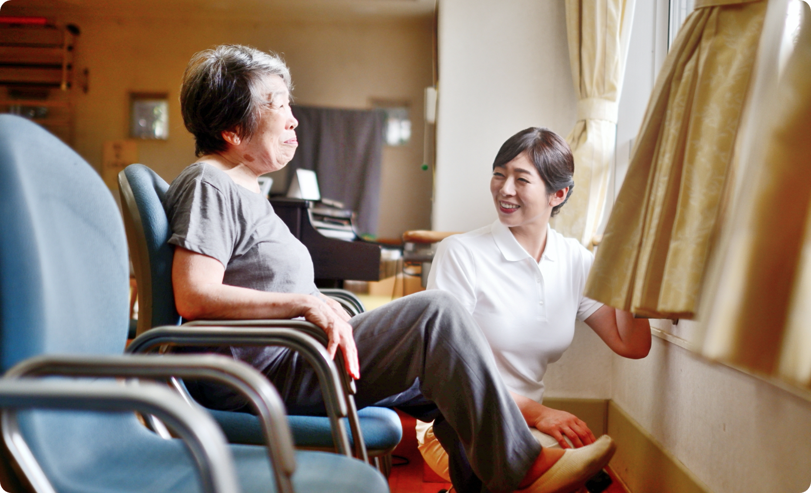

山 形 の 皆 様 の か か り つ け 医 で す
石 井 ク リ ニ ッ ク は こ れ か ら も
山形で治療し続けて30年
笑顔をお守りします
ここ山形の地で当院を開院し30年が経ちました。
皆様の笑顔を守るお手伝いをさせていただきました。
いつも皆様のそばにある”山形県民のかかりつけ医”として
これからも誠心誠意対応させていただきます。

治療内容
以下の検査項目以外でも、まずはご相談頂けますと幸いです。
一般的な内科疾患
風邪、扁桃腺炎、発熱、胸痛、むくみ、
動悸、疲れ・疲労、だるい、体重減少、
立ちくらみ、嘔気、嘔吐、吐き気、胸焼け、
食欲不振・減退、肩こり、花粉症、蕁麻疹、
アレルギー性鼻炎など

循環器内科系疾患
狭心症、心筋梗塞、心不全、心臓弁膜症、
不整脈、大動脈瘤、心筋症、心臓発作、
動脈硬化症、急性冠動脈症候群など

消化器内科系疾患
腹痛、急性・慢性胃炎、胃痛、胃・
十二指腸潰瘍、下痢、便秘、逆流性食道炎、
過敏性腸症候群、食中毒、胃痙攣、胃下垂、
胃もたれ、心窩部（みぞおち）の痛み、
胆石症、急性・慢性肝炎、自己免疫性肝炎、
脂肪肝、B型肝炎、C型肝炎、肝硬変など

お知らせ
| 2020.12.22 | 休診情報 | 2021年1月の休診日は5日、17日、27日となります。 |
| 2020.12.11 | イベント | 当院でクリスマスイベントを行います。南高校吹奏楽団をお呼びして、ロビーコンサートを開催予定です。 |
| 2020.12.01 | 採用 | 当院では臨床検査技師を募集しております。詳しい福利厚生についてご説明させていただきます。当院で働く… |
| 2020.11.12 | イベント | ホームページをリニューアルしました。 |
| すべて見る ▶︎ |


〒000-0000 山形県山形市七日町xxxxxx

000-0000-0000
診療時間
月・火
午前 8:30~12:30
午後 15:00~18:30
木・金
午前 8:30~12:30
午後15:30~19:00
土・水
午前 8:30~12:30
午後 14:00~18:00
休診日
日曜・祝日
© ISHII SOUGOU NAIKA CLINIC, All Rights Reserved.